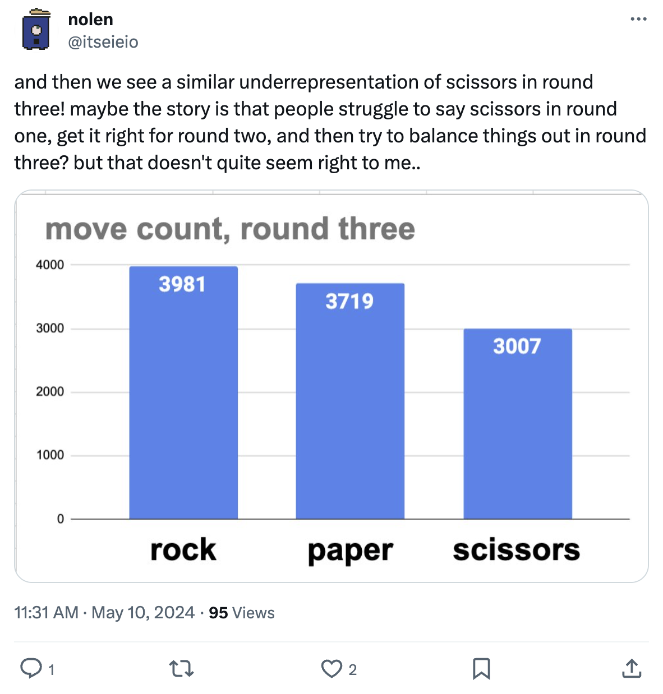

#2: Game Theory
2/3 Game
We played the 2/3 game twice. The goal is to select the number that is 2/3 of the average. We talked a bit about the theory.
- It’s impossible for anything over 66.67 to win (these are dominated, i.e. always worse) because the maximum is if everyone picks 100 and 2/3 of this is 66.67.
- Once you eliminate everything over 66.67, then the maximum anyone should pick is 2/3 * 66.67 = 44.44. Second level domination: Superior strategy if the opponent doesn’t play the first level dominated strategy.
- We can keep going by this logic and we’d end up with everyone choosing 0.
- But in the real world, this doesn’t work!
- We can try to model the real world, for example by assuming a uniform random such that the average is 50 and then could choose 2/3, which is 33.33.
- The next level to that assumption is that the first level people will choose 33.33, so we should go to the second level and take 2/3 of that, which is 22.22.
- What level are people on? What other assumptions could we make?
Rock Paper Scissors
RPS is a zero-sum game and the payouts are symmetrical as follows:
| Player 1/2 | Rock | Paper | Scissors |
|---|---|---|---|
| Rock | (0, 0) | (-1, 1) | (1, -1) |
| Paper | (1, -1) | (0, 0) | (-1, 1) |
| Scissors | (-1, 1) | (1, -1) | (0, 0) |
The Nash Equilibrium strategy is to play each action r = p = s = 1/3 of the time. Under Nash equilibrium, no player can gain by unilaterally deviating from their strategy.
A pure strategy would mean always playing one action, but a mixed strategy is mixing over your possible actions, which is what we see here.
Playing this strategy means that whatever your opponent does, you will breakeven! For example, think about an opponent that always plays Rock.
\begin{equation} \begin{split} \mathbb{E}(\text{Equilibrium vs. Rock}) &= r*0 + p*1 + s*-1 \\ &= 1/3*0 + 1/3*1 + 1/3*-1 \\ &= 0 \end{split} \end{equation}
Nash vs. Exploitative
Although we can play the equilibrium strategy and never lose, we also can’t win! If we have a predictable opponent, we’re better off in expectation to try to beat them exploitatively. In practice, you could spend some time trying to figure out what they’re doing and revert to equilibrium if you’re losing.
Opponent Modeling
Suppose you knew your opponent played the following, what are the optimal strategies?
- 60% rock, 0% paper, 40% scissors
Always rock: 0.6*0 + 0*-1 + 0.4*1 = 0.4
Always paper: 0.6*1 + 0*0 + 0.4*-1 = 0.2
Always scissors: 0.6*-1 + 0*1 + 0.4*0 = -0.6
Rock is best!
This is a tricky one because paper beats the most common opponent move, but is actually worse than rock!
Note that we only would use a mixed strategy if the EVs were the same for multiple pure strategies.
- 20% rock, 20% paper, 60% scissors
Always rock: 0.2*0 + 0.2*-1 + 0.6*1 = 0.4
Always paper: 0.2*1 + 0.2*0 + 0.6*-1 = -0.4
Always scissors: 0.2*-1 + 0.2*1 + 0.6*0 = 0
Rock is best again!
Note that we assume that the opponent plays fixed strategies. If they were able to update, then we’d probably want to be more subtle about our exploitation.
Data: Talk Paper Scissors
eieio games made a Rock Paper Scissors over voice game in which players call a phone number and get matched up with another player for a 3 game RPS match.
They published their 40,000 round data on X:
Overall: R 37.2%, P 35.4%, S 27.4%
 Round 1: R 39.7%, P 37.6%, S 22.7%
Round 1: R 39.7%, P 37.6%, S 22.7%
 Round 2: R 34.0%, 33.4%, 32.6%
Round 2: R 34.0%, 33.4%, 32.6%
 Round 3: R 37.2%, 34.7%, 28.1%
Soccer Kicker
Consider the Soccer Penalty Kick game where a Kicker is trying to score a goal and the Goalie is trying to block it.
| Kicker/Goalie | Lean Left | Lean Right |
|---|---|---|
| Kick Left | 0, 0 | +2, -2 |
| Kick Right | +1, -1 | 0, 0 |
The game setup is zero-sum. If Kicker and Goalie both go in one direction, then it’s assumed that the goal will miss and both get 0 payoffs. If the Kicker plays Kick Right when the Goalie plays Lean Left, then the Kicker is favored and gets a payoff of +1. If the Kicker plays Kick Left when the Goalie plays Lean Right, then the kicker is even more favored, because it’s easier to kick left than right, and gets +2.
When the Goalie plays left with probability p and right with probability 1-p, we can find the expected value of the Kicker actions.
| Kicker/Goalie | Lean Left (p) | Lean Right (1-p) |
|---|---|---|
| Kick Left | 0, 0 | +2, -2 |
| Kick Right | +1, -1 | 0, 0 |
\mathbb{E}(\text{Kick Left}) = 0*p + 2*(1-p) = 2 - 2*p
\mathbb{E}(\text{Kick Right}) = 1*p + 0*(1-p) = 1*p
The Kicker is going to play the best response to the Goalie’s strategy. The Goalie wants to make the Kicker indifferent to Kick Left and Kick Right because if the Kicker was not going to be indifferent, then he would prefer one of the actions, meaning that action would be superior to the other. Therefore the Kicker will play a mixed strategy in response that will result in a Nash equilibrium where neither player benefits from unilaterally changing strategies. (Note that indifferent does not mean 50% each, but means the expected value is the same for each.)

By setting the values equal, we get 2 - 2*p = 1*p \Rightarrow p = \frac{2}{3} as shown in the plot. This means that 1-p = 1 - \frac{2}{3} = \frac{1}{3}. Therefore the Goalie should play Lean Left \frac{2}{3} and Lean Right \frac{1}{3}. The value for the Kicker is \frac{2}{3}, or (0.67), for both actions, regardless of the Kicker’s mixing strategy.
Note that the Kicker is worse off now (0.67 now compared to 0.75) than when both players played 50% each action. Why?
If the Kicker plays Left with probability q and Right with probability 1-q, then the Goalie’s values are:
\mathbb{E}(\text{Lean Left}) = 0*q - 1*(1-q) = -1 + q
\mathbb{E}(\text{Lean Right}) = -2*q + 0 = -2*q
Setting equal,
\begin{equation} \begin{split} -1 + q &= -2*q \\ -1 &= -3*q \\ \frac{1}{3} &= q \end{split} \end{equation}
Therefore the Kicker should play Left \frac{1}{3} and Right \frac{2}{3}, giving a value of -\frac{2}{3} to the Goalie.
We can see this from the game table:
| Kicker/Goalie | Lean Left (\frac{2}{3}) | Lean Right (\frac{1}{3}) |
|---|---|---|
| Kick Left (\frac{1}{3}) | 0, 0 (\frac{2}{9}) | +2, -2 (\frac{1}{9}) |
| Kick Right (\frac{2}{3}) | +1, -1 (\frac{4}{9}) | 0, 0 (\frac{2}{9}) |
Therefore the expected payoffs in this game are \frac{2}{9}*0 + \frac{1}{9}*2 + \frac{4}{9}*1 + \frac{2}{9}*0 = \frac{6}{9} = 0.67 for the Kicker and -0.67 for the Goalie.
In an equilibrium, no player should be able to unilaterally improve by changing their strategy. What if the Kicker switches to always Kick Left?
| Kicker/Goalie | Lean Left (\frac{2}{3}) | Lean Right (\frac{1}{3}) |
|---|---|---|
| Kick Left (1) | 0, 0 (\frac{2}{3}) | +2, -2 (\frac{1}{3}) |
| Kick Right (0) | +1, -1 (0) | 0, 0 (0) |
Now the Kicker’s payoff is still \frac{1}{3}*2 = 0.67.
When a player makes their opponent indifferent, this means that any action the opponent takes (within the set of equilibrium actions) will result in the same payoff!
So if you know your opponent is playing the equilibrium strategy, then you can actually do whatever you want with no penalty with the mixing actions. Sort of.
The risk is that the opponent can now deviate from equilibrium and take advantage of your new strategy. For example, if the Goalie caught on and moved to always Lean Left, then expected value is reduced to 0 for both players.
To summarize, you can only be penalized for not playing the equilibrium mixing strategy if your opponent plays a non-equilibrium strategy that exploits your strategy.
Make Your Own
We spent some time thinking of games in groups to try to stump the opposing team.
Odds vs. Evens
A game was presented where each player has to simultaneously put out a number 1 or 2 with their fingers. The Odds player wins the sum if it’s odd and the Evens player wins the sum if it’s even. Would you rather be the Evens or Odds player?
It turns out that the Odds player has a small advantage and wins 1/12 in expectation at equilibrium.
Indifference in Poker
We didn’t get to this in the class. It’s a Kuhn Poker example (see link). It’s the simplest strategic poker game that uses a 3 card deck of cards Q/K/A. Each player starts with 2 chips, antes 1 of them, and then has 1 left for betting.
We can apply the indifference principle in computing equilibrium strategies in poker. When you make your opponent indifferent, then you don’t give them any best play.
Let’s look at one particular situation in Kuhn Poker and work it out by hand. Suppose that you are Player 2 with card Q after a Check from Player 1. (We could equivalently structure this as a river situation in Hold’em where Player 2 has a bluff or a very strong hand and Player 1 has a mid-strength hand.)

Note: If you play an equilibrium strategy, opponents will only get penalized for playing hands outside of the set of hands in the mixed strategy equilibrium (also known as the support, or the set of pure strategies that are played with non-zero probability under the mixed strategy). If opponents are not playing equilibrium, though, then they open themselves up to exploitation.
End Games
Highest Number Up to 100
Everyone chooses a number, maximum 100. The highest unique number chosen wins.
Aumann Game
Everyone gets a paper with a possible solution to a trivia question – only one is correct. We then go around and everyone says what probability they believe their answer is correct.
We had 8 people, so with no info, you’d expect your answer to be 12.5%. We ended with very polarized numbers where most were 0 and there was a 5%, 40%, and 80%. The 5% ended up being correct (better than 0)!.